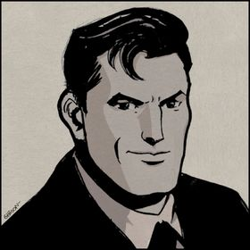

Currículum Vitae
Bruce Wayne
Resumen
Filántropo, CEO y heredero con un historial comprobado de éxito en la industria y la filantropía. Altamente motivado y con un profundo sentido de la justicia social, Bruce Wayne está dedicado a utilizar sus habilidades y recursos para hacer un impacto positivo en el mundo.
Datos Personales
- Nombre: Bruce Thomas Wayne
- Lugar de Nacimiento: Wayne Manor, Ciudad Gótica
- Fecha de Nacimiento: 19 de febrero
Formación
Como reconocido filántropo y empresario, completó su educación en prestigiosas instituciones de Ciudad Gótica y el país, graduándose con honores. Esta sólida formación ha sido fundamental en su trayectoria como líder comunitario y empresario de Ciudad Gótica.
- Básica: Academia Gotham
- Media: Academia Gotham.
- Univesitaria: Universidad de Harvard. Licenciado en Criminología y Ciencias Forenses
- Otros:
- Cursos de aviación
- Artes marciales
- OS10
Premios y Reconocimientos
Bruce Wayne ha recibido numerosos reconocimientos por su impacto positivo en la sociedad. Su labor en la comunidad, innovación empresarial y compromiso con la filantropía lo han convertido en una figura admirada en la ciudad. Algunos de sus premios y reconocimientos son:
- Graduado con honores en la Academia Gotham.
- Graduado con honores en Harvard.
- Merecedor del Premio Waye a la Filantropía año 2011-2015
- Medalla de Honor por el Servicio Comunitario
- Reconocimiento de las Naciones Unidas por su labor en la lucha contra la pobreza
- Dominio certificado de idiomas: francés, español, mandarín y japonés, entre otros.
- Licencia de conducción clase B al día